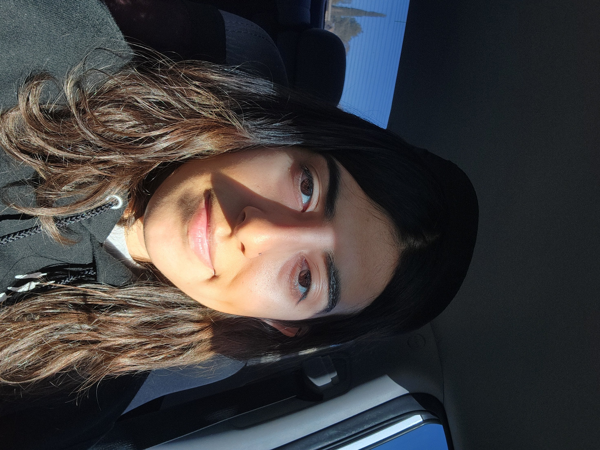

Short bio about me
Hello, my name is Desiree. Here are a few things about me: I’m currently a senior majoring in both Computer Science and Criminal Justice. Next semester, I will be graduating from college and looking for job opportunities in the workforce. Right now, I’m trying to expand my knowledge of web development for fun and practice. As a Computer Science major, I sometimes feel that my skills are a bit lacking because I rushed through this degree. Originally, I planned to pursue Chemistry and Forensics. I spent about a year and a half conducting research, only to realize that I disliked it. However, I had some interest in Computer Science, so I decided to give it a try during the spring semester of my sophomore year. I ended up really enjoying it, so I chose to pursue a degree in the field while I had the opportunity. I will be graduating in the Fall of 2025, and my goal is to enter the field of cyber forensics. Hopefully, I can build a career in that area and continue developing my skills.